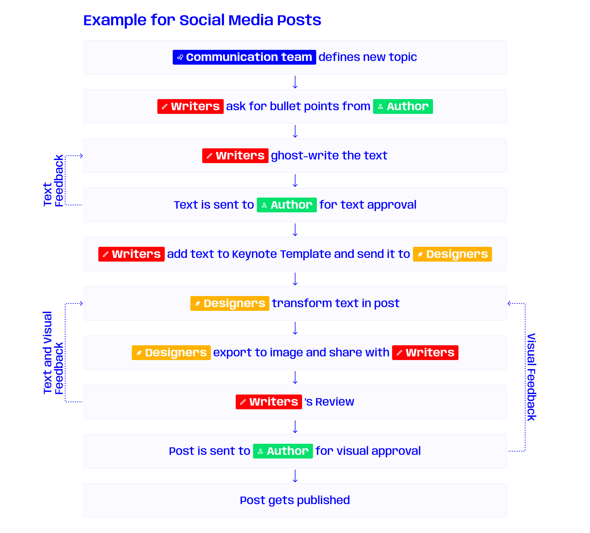
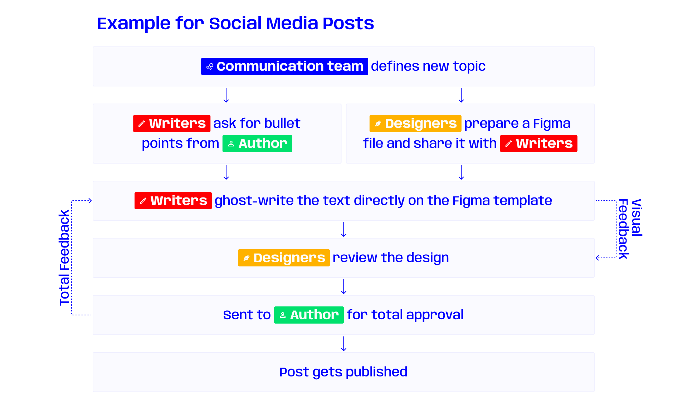

Optimize your Workflow: Get Parallel
Optimizing your workflow can be a tricky task.
When spending months doing the same task, eventually you’ll find out that, even unconsciously sometimes, you’ve
been optimizing it. The same happened with my former, in-house design team. We had been doing the same tasks over
months, so, without thinking too much about it, we also started developing our workflow further.
Although we were making progress, I felt like there was still space for conscious and active improvement, so I put
hands to work. Here’s how we managed to save a few hours (and sometimes days) out of our tasks’ durations.
* * *
First: Find our tasks
Before we started working out our workflows, we had to become aware of exactly what they were. As we
didn’t have any documentation written so far, we were basically doing things by instinct. Thus, we had to document
what type of repetitive content we were producing.
Social Media Posts
Videos
Whitepapers (sales’ documents with up to 20 pages)
* * *
Second: Analyze said tasks
Now that we knew what we were doing, we needed to analyze its workflows. This meant taking a retrospective look at
the past few tasks, and writing down the Whos and Hows. Here’s an example on how it looked:

Third: Find areas for improvement
Think about tasks and subtasks that can get reduced in time without changing the end result. This can be done, for
example, by paralleling tasks that are not consequential, merging feedback rounds together, or by using
collaborative tools. Take into consideration that if you’re targeting tasks that are too rooted in your teams, not
only will you have a hard time, given that it might very well be almost entirely optimized, but you will also have
to do it gradually, as a sudden change can backfire and bring both inefficiency and frustration.

Tools do play a big part in reducing the feedback loop duration. By choosing real-time collaborative tools, we
can remove almost completely the time between exporting, uploading, and sending the products for review.
Especially on products like videos, that take some time to export and send.
Here’s some nice tools that we used for this:
For Social Media Posts, we replaced Adobe Illustrator and Adobe InDesign with Figma for its real-time
collaboration feature;
After being acquired by Adobe and embedded on Premiere Pro, Frame.io
became
an even faster and reliable tool to share videos for review. After our conversion to DaVinci Resolve, we kept
using Frame.io, but it does not integrate as seamlessly as with Adobe Premiere Pro;
As for documents such as our Whitepapers, Adobe InDesign has a very cool Share function that allows for
good feedback sessions. Although Affinity Publisher doesn’t yet have anything like it, you can always simply
export it as a PDF, and instruct your Author to use the Acrobat Review functions. It’s not optimal but there’s
still space to grow here (let me know if you have any nice, preferably free and open-source, tool for it!)
* * *
Fourth and last: Don’t store your pencil away
Although it might look like your job here is done, don’t let that sit in. Keep an eye open to how the team is
reacting to the new workflow. What looks good and promising on the paper might be a total disaster once applied to
real-world issues. That’s one reason to use agile methodologies: keeping the cycle spinning will allow you to
iterate more often. Keep asking for feedback, check if the task durations are lowering or raising, and ask the
team if they notice any quality difference in the work produced. And finally, if you want to make workflow
improvement a well-established task on your to-do list, schedule a Retro every now and
then.